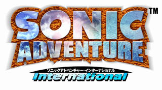

| SONIC ADVENTURE International |

Release date: October 14, 1999

It could be you! The fastest guy in the world!
Eight months after Sonic Adventure...
Now, Sonic Team will be presenting four films.
Each of the four works reflects the ideas of Yuji Naka and the Sonic Team.
The first to be announced is Sonic Adventure International,
a worldwide version of Sonic Adventure that will allow everyone in the world to participate!
This project has been in progress secretly as an "overseas version" since the end of Sonic Adventure's development.
We want to feel the wind of foreign countries!... so the development team flew out of Japan!
The U.S. moved the location to San Francisco to begin development!
Sonic Adventure International is a new game from San Francisco!
It's a global standard edition of Sonic Adventure for everyone in the world!
| You've got to experience Sonic reborn in English | Let's go on another adventure with Sonic and his friends! |
| Emblem list display. The list shows you the status of all 130 emblems you've acquired! | Of course, voices and subtitles can be combined freely. Maybe you can use it for language study? |
| Presented By SONIC TEAM 1999 | |